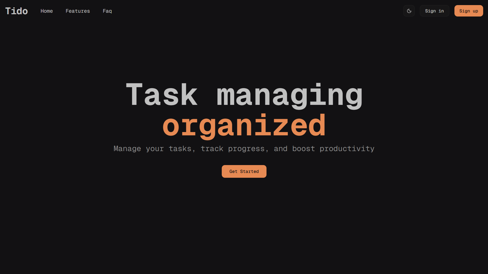

My Projects
-
Job Tracker

Technologies used: Node.js Express.js MongoDB React.js JWT
A full-stack web application for managing job applications.
- Developed a Full Stack job tracking application using Node.js and React.js.
- Built a RESTful API with CRUD functionality and JWT authentication.
- Managed data persistence with MongoDB and version control with Git/GitHub.
- Created a responsive frontend with React.js and React Router.
-
Task Manager
Technologies used: Node.js Express.js MongoDB React.js Tailwind
A full-stack task management application built with the MERN stack.
- Built with Node.js and React.js for task management.
- Developed a RESTful API with CRUD support.
- Frontend styled with React Router and Tailwind CSS.
- Utilized MongoDB for data persistence and Git/GitHub for version control.
-
Markdown Previewer

Technologies used: React.js Marked.js Bootstrap
Allows users to write and preview GitHub-flavored markdown in real-time.
- Developed a markdown preview tool with React.js components.
- Integrated Marked.js for parsing GitHub-flavored markdown.
- Designed a responsive split-panel interface with Bootstrap.
- Deployed to Vercel for public access.
-
Administration Bot

Technologies used: Node.js Telegraf Sequelize PostgreSQL dotenv
A bot that supports user registration, admin functionalities, and user management.
- Created a Telegram bot using Node.js, Telegraf, and Sequelize.
- Implemented PostgreSQL for managing users.
- Structured command-based interactions with admin/user workflows.
- Used Git and GitHub for version control.
-
Car Backend
Technologies used: Node.js Express.js MongoDB Mongoose dotenv
A Node.js backend API for managing car data.
- Developed a RESTful API with querying, sorting, and pagination.
- Implemented CRUD functionality with MongoDB and Mongoose.
- Organized backend using controllers, routes, models, and middlewares.
- Version control handled with Git and GitHub.
-
Code with Abel
A YouTube channel dedicated to providing high-quality content on Python, JavaScript, C++, and web development.
- Created videos on Full Stack MERN applications.
- Taught backend development concepts such as RESTful APIs.
- Built a community by sharing hands-on coding projects consistently.